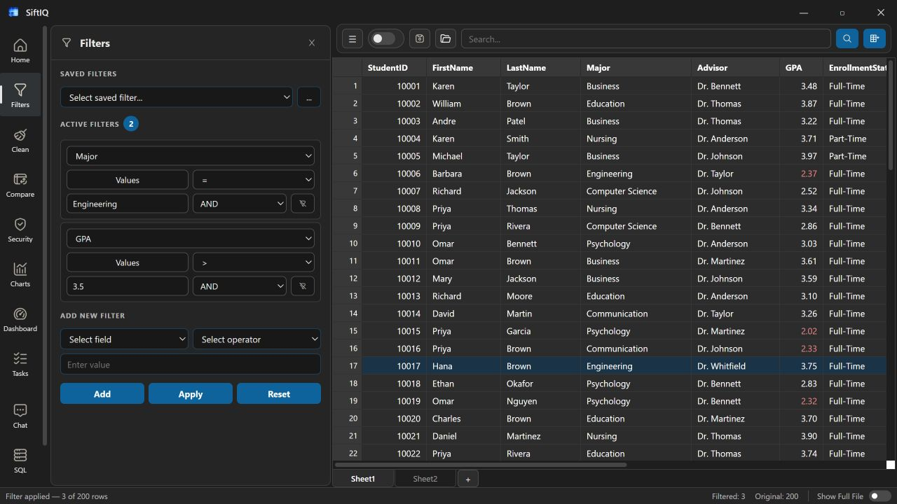
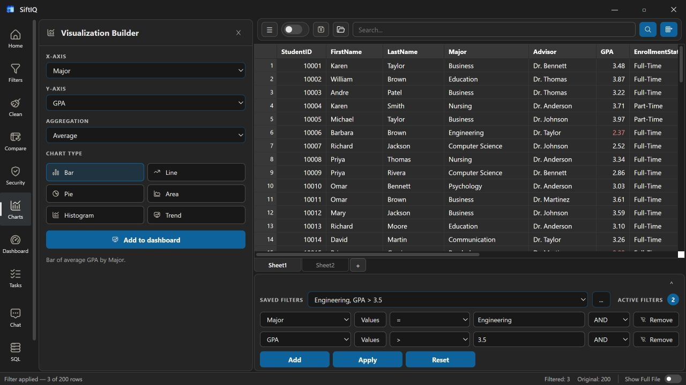
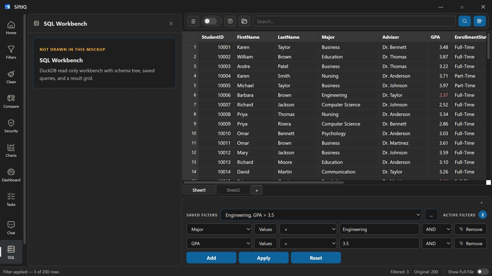

Data workspace
Load, inspect, sort, and work directly with tabular files.
 SiftIQGet SiftIQ ↗
SiftIQGet SiftIQ ↗Serious analytical range
Use the tool that fits the question, from fast filters to detailed SQL and reusable dashboards.
Load, inspect, sort, and work directly with tabular files.
Ask for summaries, calculations, recommendations, and analytical plans.
Prepare data with visible, controlled operations and immediate feedback.
Choose fields, aggregations, and chart types in a dedicated workspace.
Query files with joins, CTEs, calculations, and precise logic.
Arrange KPIs, visualizations, and tables into living analytical views.
Data preparation
Apply filters and preparation steps while retaining a clear view of the active dataset.

Chart builder
Configure charts from real fields and aggregations without leaving the workspace.

SQL
Write and run SQL directly against file-backed data with results alongside your query.
